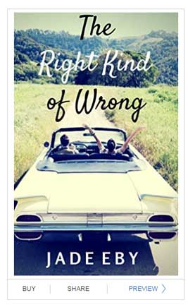
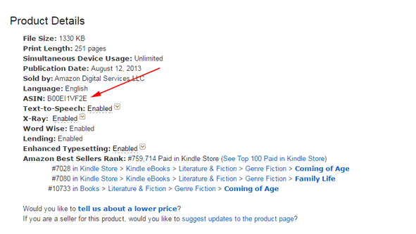

Amazon now allows you to show a preview of a book on your website as if you were reading on a Kindle. If your book is published on Amazon, you have the option to use this preview instead of a plain text excerpt.
If you'd like to use the Kindle Live Preview, you simply need to enter your book's ASIN. To find your book's ASIN, go to your book's Amazon page. Scroll down to Product Details
